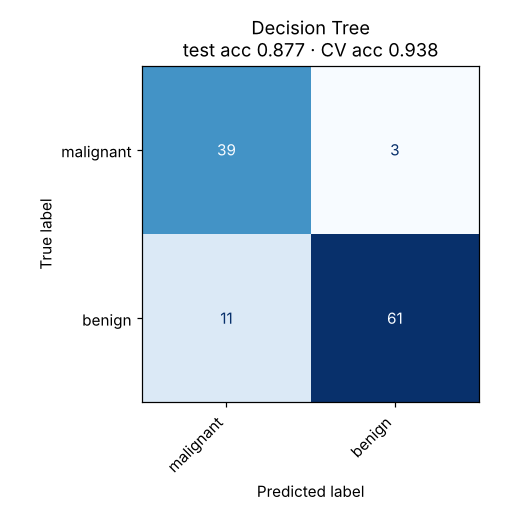

Decision Tree
Asks a sequence of yes/no questions about the features, like a flowchart, until it reaches an answer.
Try it
Experiment: On Overlapping blobs, raise the depth to 10. Train accuracy climbs towards 100% while test accuracy falls. The tiny boxes are the tree memorising noise.
The idea
A decision tree splits the data with a question such as “is x ≤ 0.31?”, then splits each side again, and so on. Each question is chosen to make the two resulting groups as pure as possible, ideally one class each.
The result reads like a flowchart, and the demo prints it beside the plot. Every split is a straight cut parallel to an axis, which is why tree boundaries look like staircases.
How it works, step by step
- Consider every feature and every possible threshold.
- Pick the split that most reduces impurity (Gini or entropy): the two sides should each be dominated by one class.
- Repeat on each side until a stopping rule: maximum depth, too few points, or a pure group.
- Each leaf predicts its majority class. A new example follows the questions down to a leaf.
Choose the split that minimises the weighted impurity of the two childrenDepth, minimum leaf size and pruning (ccp_alpha) are the brakes that stop a tree from memorising noise.
Strengths and weaknesses
Strengths
- Easy to explain: the model is a set of rules
- No feature scaling needed; handles numbers and categories
- Captures interactions and thresholds
- The building block of random forests and gradient boosting
Weaknesses
- Overfits easily when grown deep
- Unstable: small data changes can give a very different tree
- Axis-aligned cuts struggle with diagonal boundaries
- The weakest single model in this repo (87.7% test on Breast Cancer)
Use it when: You need rules a person can follow, or as an exploratory first look at which features matter.
Avoid it when: Accuracy matters most. Use a random forest or gradient boosting instead.
In this repository
Dataset: Breast Cancer Wisconsin (569 rows, 30 features)
The gap between cross-validation and test accuracy is a sign of instability: a different split gives a different model.

from sklearn.tree import DecisionTreeClassifier, export_text
tree = DecisionTreeClassifier(max_depth=4, min_samples_leaf=5).fit(X_train, y_train)
print(export_text(tree, feature_names=feature_names))Full code: models/06_decision_tree. Train it on your own data with
python models/06_decision_tree/train.py --data your.csv --target column.
Check yourself
It minimises impurity such as Gini or entropy.
One feature per question means cuts are horizontal or vertical.
Limit depth or leaf size, or use an ensemble.
Answer all three correctly to mark this model as learned.